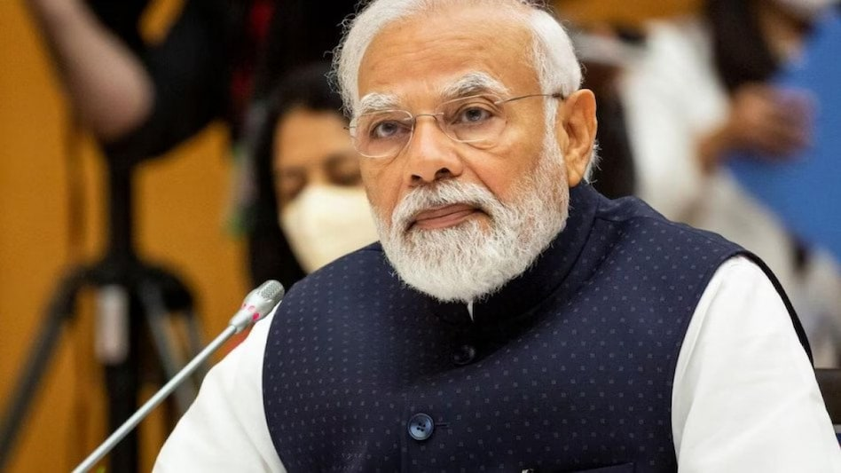

17 september 1950
"you can see the change you want to,be what you want to be"
Biography
September 17, 2024, marks the 74th birthday of India's Prime Minister, Narendra Modi. Born on September 17, 1950, in Vadnagar, Gujarat, Modi has served as the Chief Minister of Gujarat and is now in his third term as Prime Minister. The PM has inspired millions of Indians with his vision, leadership, and inspiring thoughts on various aspects of life. Modi was the chief minister of Gujarat from 2001 to 2014 and is the Member of Parliament (MP) for Varanasi.
The Prime Minister of India, Narendra Modi, is known for his leadership and vision of a "New India." His initiatives like Swachh Bharat Abhiyan, Make in India, and Atmanirbhar Bharat have inspired young people to work towards self-reliance and nation-building.